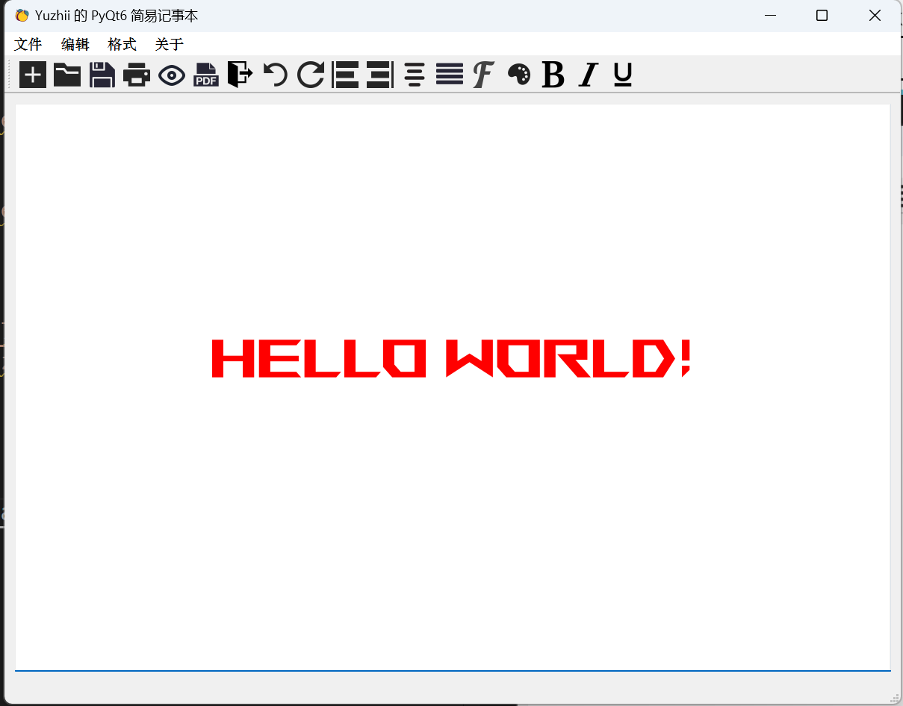

反思最近的学习状态
对于 PyQt6 的学习，很是漫长，写下第九篇 Blog 时，我已经不想去看了。我突然发觉这种面面俱到的学习方法其实是不对的，对每一个 Qt 部件都去学习，这样的学习效率其实是很低的，而且很容易忘记。我应该把精力放在实际项目中，遇到什么问题再去查阅文档，这样的学习效率才是最高的。
所以，我决定了，我先大概了解一下 Qt 的基本部件，也就是说，我将简单的了解这些部件，简单的记录它们，不会像以往那么的详细了。然后就开始做项目，遇到什么问题再去查阅文档，这样的学习效率才是最高的。
目前，我已经物色了几个有趣的项目，我会在后面的 Blog 中介绍。
参考文档：
PyQt6 官方文档
开发一个记事本
接下来，我们将开发一个记事本，作为 PyQt6 的第九篇 Blog。
在 Designer 中创建一个记事本
Menubar and Menu items
打开 Designer, 创建一个 MainWindow
在 MainWindow 中添加一个 MenuBar
在 MenuBar 中添加 Menu
在 Menu 中添加 Action
Icon to Action
在 Designer 中，选择 Action
在右侧的属性栏中，选择 Icon
点击右侧的按钮，选择一个 Icon
在 Designer 中，选择 TextEdit
添加一个 toolBar
在 toolBar 中添加 Action
设置布局
可以先创建一个资源文件，然后把 Icon 放到资源文件中，这样可以方便管理。
Notepad 完整代码
这里学习了一下如何将 GUI 代码和逻辑代码分离, 使其更易于维护
效果:
